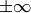

13.10. Meta-heuristics and SearchMonitors
13.10.1. The Metaheuristic class
The Metaheuristic class is declared and defined in the file constraint_solver/search.cc.
Some procedures are so common when implementing a meta-heuristic that we defined a common base class Metaheuristic. By itself, it only updates the objective function.
The constructor is declared by
Metaheuristic(Solver* const solver,
bool maximize,
IntVar* objective,
int64 step);
All arguments are self-explanatory. The last argument step lets you improve the objective function by a certain (positive) step. Again, as in the case of an OptimizeVar there is no fancy algorithm to change dynamically this step but you can implement one yourself.
Three callbacks were defined:
- EnterSearch():
We initialize the objective function:
void Metaheuristic::EnterSearch() { if (maximize_) { best_ = objective_->Min(); current_ = kint64min; } else { best_ = objective_->Max(); current_ = kint64max; } }This implementation takes into account that no initial solution was provided, so the current best value is  (i.e. kint64min or kint64max) depending if we maximize or minimize the objective function.
- AtSolution():
Remember that this callback is triggered when a solution has been accepted (by the AcceptSolution() callback). We simply update the best solution value and return true to continue the search:
bool Metaheuristic::AtSolution() { current_ = objective_->Value(); if (maximize_) { best_ = std::max(current_, best_); } else { best_ = std::min(current_, best_); } return true; }- RefuteDecision():
We are about to refute a Decision and go right in the search tree. If we can not improve enough our current solution, we fail:
void Metaheuristic::RefuteDecision(Decision* d) { if (maximize_) { if (objective_->Max() < best_ + step_) { solver()->Fail(); } } else if (objective_->Min() > best_ - step_) { solver()->Fail(); } }
13.10.2. Callbacks to implement
Here are several callbacks you might want to implement:
- EnterSearch():
- This is the method to initialize your meta-heuristic. You can call Metaheuristic::EnterSearch() to update the objective function. If you have an initial solution at hand, see the box What about an initial solution? (to be done).
- RefuteDecision():
- Blabla
- ApplyDecision():
- Blabla
- AtSolution():
- Blabla
- LocalOptimum():
- Blabla
- AcceptNeighbor():
- Blabla
- AcceptDelta():
- Blabla
Google or-tools |
User's Manual
Google search
Welcome
Tutorial examples
Current chapter
Previous section
Next section
13.11. The Routing Library (RL)